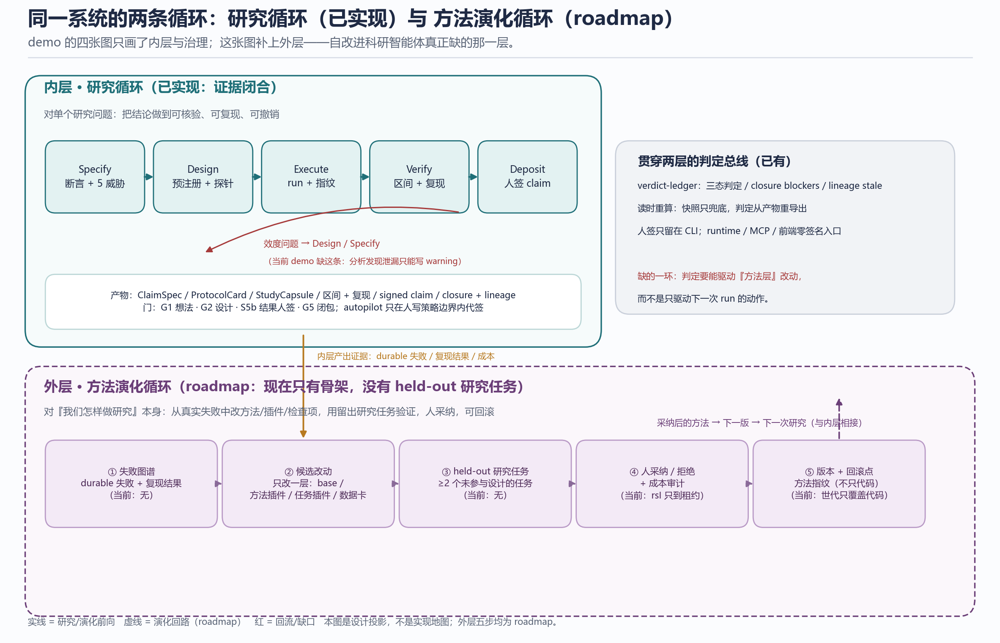

让每个结论有出处，
让每次失败改方法。
内层（已实现）：证据闭合——文献检索、独立复现、科研写作与核验接成闭环，claim 只能由证据创建、由人签核。研究执行（已跑通，探索性）——把这条流水线用于 ESE：SE 文献→候选→方法协议→repository-mining 执行→反思，结果可封成 run-capsule/EA，等人签。外层（roadmap）：方法演化——把 durable 失败、复现结果与成本沉淀成方法/配方改动，用 held-out 研究任务验证，再经人采纳与回滚。本页是 早期 demo / 静态展示镜像（无真实执行），产品本体是 Wellspring-Agent，真实执行只在本地 runtime / CLI。
数字截至 2026-11，随版本变化；测试数取自已记录的判定，不写成宣传口径。以上都是结构指标（有多少模块/工具/测试/门/环），不是能力指标（研究质量是否真的变好）；后者目前 0 项可报，见下方「能力指标（空态）」与「两条循环」。
这些数字对第一次看的人意味着什么？
- 34 模块 SPEC —— 每个能力先写「合同」再写代码：改行为必须先改合同，代码不能偷偷越权。价值：别人（或别的 Agent）扩展平台时，边界是读得懂、测得到的。
- 46 MCP 工具 —— Claude Code / Qoder / Codex / Zcode 用同一份工具表接入；里面没有任何签名/批准按钮。价值：外部 Agent 能干活，但签字永远在人手里。
- 1500+ 自动测试 —— 每条边界（摘要不能当证据、未签不能导出、fixture 必须自报…）都有测试钉住。价值：改坏了立刻红，而不是演示时才发现。
- 4 人工门 —— 选想法 G1、批设计 G2、签结果 S5b、签导出 G5 必须人签（或人预先写策略授权 autopilot 代签并留痕）。价值：自动化跑门与门之间，高杠杆决定留给人。
- 4/4 反馈环 —— 上一轮的判定（证伪 / 评审 / 同质化 / 失效）会真实改变下一轮动作：否证条件带进新假设、被评审否掉的候选降权、单一视角强制换轴、失效沿哈希链锁导出。默认关闭、逐环开启；约束来源哈希过期即拒绝。价值：反思不是日志，是下一步的输入。边界：这是机制已接通的读数；「接上环是否让研究更好」的效果测量（M1 多 run、M2 跨任务）仍未完成，n 与功效见 docs/fact-baseline.md。
DEMOS / 进入智能体
介绍在这里，运行在子页。
每个按钮进入一个具体的科研智能体页面；真实执行、模型调用与人工签署只在本地 CLI / runtime。
FEATURES / 四个证据判定 + 一条演化闭环
不是再做一个论文生成器。
四个证据判定回答“这条结论是否可信”：资格、完成、失效、供给；稳定的是证据与门禁，可变的是工具、流程与接入方式。第五条是演化判定——这次方法改动是否让下一次研究更好；它需要 held-out 研究任务，当前仍是 roadmap。
句子必须落到已持有 span 或人签实验证据；claim 只由 Evidence 创建，摘要不能当全文证据。
RunCapsule + 独立重跑 + EA；Work 与 Judge 分离，失败也留下可审计的运行胶囊与成本。
spec/data/code/evidence/claim 以 SHA-256 串联；输入变了沿链标 stale，导出 fail-closed。
模型可换（含无 key 的 host-model），但证据资格不可移植；经验准入/租约/撤销，升级人签、降级自动。
判定要能驱动方法与配方的改动，而不只是下一次 run 的动作。已有：类型化研究记忆、阶段×方法注册表、候选/租约/回滚。缺：durable 失败图谱与 held-out 研究任务——没有它们，“改进”不可测。
DESIGN / 系统投影
同一系统的四个投影。
下面四张图与《科研智能体策略论证》原文 SVG 完全一致，是设计投影而非实现地图。读法：③ 先定授权与停止边界 → ① 看主循环的前向与反馈 → ② 看记忆准入门 → ④ 看执行与路由。
① 过程可信主循环
跑通时（2026-11）：七阶段链与 G1/G2/S5b/G5 真实执行；T6b 证伪/反事实当前只有审计项，自动回指闭环在 roadmap；信念修订与同质化监测未实现。
图的性质：设计投影（手绘/说明图），不是某次运行生成的产物；运行态证据见「最近一次真实 ESE 全链运行」面板。 · 运行态证据
② 记忆协调与证据准入
跑通时（2026-11）：memory_ab 记忆注入 A/B 与记忆库单一路径写入真实可用；类型化记忆图谱与运行时自动准入门未实现（M2 四存储策略对照只跑了准入半程）。
图的性质：设计投影（手绘/说明图），不是某次运行生成的产物；运行态证据见「最近一次真实 ESE 全链运行」面板。 · 运行态证据
③ 科研持续委托闭环
跑通时（2026-11）：授权范围前置（policy scope）、越界即停、目标撤销即停真实执行；autopilot 是单次委托（从主题跑到封包后结束），图中「常驻触发 → 相关性检查 → 回指」的持续回路未实现。
图的性质：设计投影（手绘/说明图），不是某次运行生成的产物；运行态证据见「最近一次真实 ESE 全链运行」面板。 · 运行态证据
④ 执行与路由架构
跑通时（2026-11）：路由只协调不下场（MCP 46 工具零签名入口）、本地 runtime/CLI 执行、默认拒绝真实成立；「隔离执行单元」对应外部 host 进程 + Harness² Python 3.12 桥进程，不是平台内调度池；独立外部监督控制回路未实现。
图的性质：设计投影（手绘/说明图），不是某次运行生成的产物；运行态证据见「最近一次真实 ESE 全链运行」面板。 · 运行态证据
门禁口径（canonical）· 四张图与所有子页共用
四个人工门：G1 想法选择 = S3 · G2 设计批准 = S4 · S5b 结果人签 = S5c · G5 闭包签署 = S16。升级人签、降级自动；自动门（Q0 / Q1 / G3 / G4）未过走默认拒绝，不静默放行；四个门都不能由模型代签。
图① 的「人门·假设选择 / 设计批准·契约 / 签署」分别对应 G1 / G2 / S5b 结果签署，青色「统计 / 复现门」是自动门。G5 闭包签署在导出边界（图③ 核验外部结果之后的授权收口），不在图① 的七阶段投影内 —— 不要把两者混读；图③ 的「必要时人签」落到实现就是 G2 / S5b。
四条反馈（T6b 证伪 / 反事实、信念修订 / 假设再激活、同质化监测、溯源 / 失效传播）都回指更早阶段并改变下一步动作，而不是只写反思文本。子页 S0–S16 全链、接入闭环、七幕演示 与自进化循环按同一套语义绘制，门禁标签不另造口径。
两条循环 · 为什么现在还不是「自改进科研智能体」
上面四张图讲的是内层：单个研究怎么做得可信；它们没有画外层：方法怎样随失败变强。缺的不是门禁，是这一层——所以本站把「自改进」写成 roadmap，而不是能力。

图的性质：由 prototypes/ese/make_figure_loop.py 生成的说明图，不是运行数据的作图；生成命令见 prototypes/ese/README。 · 生成脚本与说明
内层闭环（span → claim → closure → lineage）、判定总线（verdict-ledger 读时重算）、人签门、失效传播、受治理的 RSI 控制面（候选 / 租约 / 世代 / 回滚）。
阶段×方法注册表（9 方法 × 10 阶段）+ arXiv cs.SE 语料（8 篇 flaky-test 论文、6198 span）+ 协议执行器：3 个 OSS 仓库 5132 次源码提交，37.5% 同提交改测试（95% CI 36.2–38.8）；分层后调整差 +6.8pp，但 requests +10.7 / httpx +4.3 / click −0.7，效应异质。全链：真实 API 下 S0–S16→创新评审→中文初稿（9401 汉字/73 引用）→手稿评审→成稿审计 ready_for_human_review；repository-mining 结果另已封成 run-capsule/EA（0 阻塞）。边界：G1/G2/G3/G5 仍人签，无 Claim；accepted≠通过，ready≠可投稿（design/99–112）。
内层闭环（span → claim → closure → lineage）、判定总线（读时重算）、人签门、失效传播、受治理 RSI 控制面（候选/租约/世代/回滚）。边界：门是人签的，机制接通不等于效果（design/71、75）。
类型化记忆图（12 类节点/9 类关系/准入/哈希过期/预算化 pack，e2e 实测 23 节点、6 条 durable 失败）+ 冻结 held-out rubric（A 卡 12/14；B 卡 n=4 配对 +1.25（95% t-CI [0.46, 2.05]，符号检验 p=0.125））+ 配方候选 R1/R2（A 卡 14/14）。边界：B 卡跨过 n≥4 守卫但未算区间；held-out 评分测的是智能体产出符合性，不是 ESE 现象结论（design/92–97）。
① 跨项目失败图谱：已有 6 条 durable 失败节点；--memory-pack 可只读注入 S2/S4，但默认关闭、复用率未统计；② held-out 研究任务：已有 3 张冻结任务卡与确定性 rubric（首轮 12/14，n=1）；记忆注入已接通（配对 12/14 vs 12/14，underpowered），缺多任务、多次重复与配方候选复测；③ 自改动的对象仍停在检索参数 / harness，而不是研究方法与设计。
本站的「自改进」只到受治理控制面：能记录候选、跑租约、人签采纳、留回滚点；还不能证明「研究做得更好」。这条界线写在 design/82 与 modules/rsi/SPEC.md，不在图上美化。
能力指标（空态） · 研究质量到底有没有变好
结构指标可以靠多写模块、多写测试增长；能力指标只能靠真实研究测量。这张表每轮如实更新：未测就写未测，不用结构指标代替，也不把机制接通读成效果。
定义：已签 claim 在 6 个月后仍未被 lineage/verdict 判失效的比例。当前：未测。缺口：需要跨项目、跨时间重查；现有证据只覆盖单项目 run。
定义：reproduced/partial 的独立复现数 ÷ 已尝试复现数。当前：仅 search-study 有（跨数据集复现计数与功效阶梯）。缺口：ESE 实验还没有独立 replication 记录。
定义：新研究在设计前读取并引用了相关 durable 失败的比例。当前：图谱已有 6 条 durable 失败（research_agent/failures/atlas.json，2026-11 真实踩坑），记忆包可通过 --memory-pack 只读注入 S2/S4（默认关闭）；复用率仍未测。缺口：默认注入策略与引用率统计。
定义：在未参与配方设计的冻结任务卡上，按预注册 rubric 通过的检查数。当前：A 卡（n=1/臂）baseline 12/14 · R1 14/14 · R2 14/14；B 卡（未执行过的卡，n=4/臂）baseline 12/12/12/12 vs R1 14/13/13/13，配对差 [2,1,1,1]，均值 +1.25，95% t-CI [0.46, 2.05]、符号检验 p=0.125（CI 不含零但符号检验不显著，n=4 时两者本来就该一起看；不宣称显著）。差异全部在 experiment 轴；idea/paper 已到 rubric ceiling。定位：评估对象是智能体产出的草稿是否符合方法规范，不是对 ESE 现象的实证结论（见 design/97、design/110）。
定义：人签 + 审阅 + 处理一条 claim 的分钟数。当前：未测。缺口：没有计时记录；自动化若不记录人工成本，等于把成本藏起来。
点估计绕过区间门的次数应为 0（机制上不允许）；stale 建议实际发生次数已有读数（M1 抓到 1 次快照漂移）。反指标的作用是证明"没变坏"，不是证明"变好"。
口径与逐项读数以 docs/fact-baseline.md 为准；本表是导航与空态声明，不是证据。补齐剩余项需要多张 held-out 任务卡 + 配方对照 + 计时记录（design/83、design/93）。
最近一次真实 ESE 全链运行 · PIPE-20261118T120549Z-f36858
本地真实 API 执行（非 fixture）；门按设计停住。面板由 scripts/build_ese_run_panel.py 从 demo.json 生成，不是手写。
ok · 3 warning(s)
synthesized
candidates_need_human · 12 warning(s)
needs_human · 8 warning(s)
schematic_ready
needs_evidence · 6 warning(s)
needs_more_work · rounds=1 · accepted=True
ready_for_human_review · citations=73 · han=9401 · submission_ready=False
Q0=pass · G1=needs_human · G2=needs_human · G3=blocked · G5=blocked
static mirror of one real local run; gates need a human, no Claim/EA/signature is created by this panel
研究主线 · 四条策略 × 三个方向 × 四个可证伪问题（1110 组会口径）
一句话主张：不做端到端「自动写论文」——做两件事：让过程可信，让判定真正改变下一步行动。四条策略都是待验证的计划，不是已实现的功能；每条带一个能把它证伪的入口。新颖性只落在四处：证据链复现 · 失效传播 · 判定消费 · 学习证据准入。2026-11 起，系统还能把同一流水线用于 ESE 研究执行（repository-mining 起，探索性结果、人签前；design/101–107）。
B 守内核，A 做第一个切口，C 放后面；②始终作为诊断实验贯穿。读图顺序 ③ → ① → ② → ④。
M0 最小证据闭合实例（能签署且变更锁导出）→ M1 五类反馈对照（Q2）→ M2 四存储策略 + 失效探针（Q3/N4）→ M3 论文与外部评审。每步的验收都是「可失败的」：达不到就重述口径，不换指标。
不追端到端生成（外部审计：AI Scientist 42% 实验失败仍成文、Co-Scientist 无验证时严重结果幻觉 ~90%；见 design/1110 讨论与 arXiv 2502.14297）；不重造度量（ARS / CCFA 信封借来用）；不照搬静态 skill 目录；不放开无约束自主执行——人工门留在假设选择、设计批准、签署三处，自动化只跑门与门之间。
控制面 / 执行面分离、两级过滤（程序快层 → 语义慢层）、任务线程直通、异步推理、存算分离、独立外部监督——来自 DeepSeek 两篇工程文章（非同行评审，只作设计参照）。
接下来做什么 · 一个总线 + 四个端口（71 号设计文档 · 2026-11-10 立项）
四图对照的起点：四条反馈环曾只有「溯源 / 失效传播」一条真实自动闭环。本轮把其余三条的回指侧也接通——判定变成下一轮假设生成的输入（默认关闭、逐环开启、来源哈希过期即拒绝），并给图③补上「触发 → 相关性检查 → 下一次 run 消费」的委托骨架。解耦设计把"判定改变下一步行动"做成可插拔、可单独开关与测量的对象——这正是四条策略的实验台。
verdicts collect）。constraint_kind + payload，生成端按类型分派（文本仅供人读，旧账本消费边缘一次性推断）——改一句措辞不会让闭环静默失效。T6b 携带已执行否证条件、信念修订对「revise or drop」候选降权、同质化强制第二视角；idea.json 写 feedback_constraints_applied provenance。消费时重算来源 sha256，stale 默认拒绝。关闭全部环 = 逐字节一致。exec faces 只读），新面可注册；「路由只经端口分派」仍 roadmap。不引入常驻进程，autopilot 单次委托语义不动。search-study 三态判定（区间跨零即「不可判定」）· 复现计数 + 功效阶梯（会推翻自己的旧结论）· 护栏开火率 8.1% · Host-as-Model 零 key 闭环 · autopilot 单次委托 · 46 工具零签名入口 · M1 反馈敏感性实测（2026-11-11）：真实判定 1.0 自复现、退化类均值 0.333、矛盾判定 5/5 升级人工；端到端 behavior_changed=True（stale 重签建议被 verify_bundle 取代，见 73- 号设计文档）· 反馈回指消费 E2E（2026-11-11）：pipeline 读新鲜约束进 idea 生成、stale 约束默认拒绝、委托事件下一次 run 消费并标 acted（tests/test_pipeline FeedbackLoopWiringTest 钉住）。
Q1 指标收益与独立证据是否脱钩（优先预实验）· Q2 反馈何时真改变行动 · Q3 一次成功何时值得沉淀为经验 · Q4 自主循环是否越走越窄。
71-四图对照与解耦设计（四图逐环节对照 + 可失败的验收）· 73-M1/M2 收尾设计（单会话/多会话可选）· 逐项实测读数见仓库 docs/fact-baseline.md。
门禁与读法以上方 canonical 卡片为准；demo 阶段映射 G1=S3 · G2=S4 · S5b=S5c · G5=S16，各子页投影的标签均映射到此统一口径。
图来源：科研智能体策略论证（1110 可读性修订版）· 第 07 节。四张图是策略投影，不是实现地图；当前实现状态以功能地图为准，本站为静态镜像、无真实执行。
SCOPE / 平台边界
这是平台，不是 RSI 基础设施。
本平台负责「科研过程 + 证据 + 自改进判据」；流水线编排、版本回滚与评测调度可以下沉到独立的 RSI 基础设施。边界写清楚，两边才好对接。
本平台负责
- 模块契约与产物：QueryPlan / Span / EA / Claim / Closure
- 数据基础：文献、实验、图表、稿件、基金的 artifact 与哈希
- 自改进判据：准入理由、租约、撤销传播、留出增益
- 人签门：G1 / G2 / S5b / G5，升级人签、降级自动
可委托 RSI 基础设施
- 流水线编排与重试、阶段级 checkpoint
- 版本 / 回滚 / 租约生命周期
- 细粒度反馈：知识原子级的冲突与污染检测
- 评测调度：小数据集、Token 预算、DeepSeek 基座
framework_api.dispatch；递归改进的执行已接到外部 Harness²（自进化接缝），平台只消费 harness2-run-0.1 产物并做准入；流水线编排 / 版本回滚 / 评测调度的其余部分仍是 roadmap。不把「已实现的控制面」说成「已完成对接」。分工口径：自迭代的执行下沉到 RSI 服务；平台只保留判据（准入理由 / 租约 / 撤销传播）与数据基础，不为每个循环重造一遍基础设施。
VISION / 预期效果
我们要把科研做成什么样。
以下为演示愿景（SIM · 非实测）：展示系统建成后预期的判定与效果形态，数字为示意，不代表真实实验结果。
记忆/门控对照以配对区间判定；区间跨零即"不可判定"，不冒充结论。
每句结论落到 span 或人签实验证据；变更沿链标 stale，导出 fail-closed。
升级人签、降级自动；候选版本与平台指纹绑定，可关联、可回滚。
METRICS / 数字怎么读
每个数字的实际价值。
不堆指标。下面每个读数都对应一个可检查的工程事实，以及它对"科研可信"的实际作用。
含义：每个子智能体先有 Markdown 契约（输入/输出/门禁/不变量）。价值：改一个模块不必理解全部代码；同学可据此做细粒度自进化而不破坏边界。
含义：离线回归测试总量，随提交增长。价值：任何改动破坏证据链/门禁会立刻红，保证"可核验"不是口号。
含义：想法选择/设计批准/结果人签/闭包签署四个把关节点。价值：机器起草、人作判断；未签名的结论进不了导出，杜绝"AI 自己说了算"。
含义：静态 demo 不联网、不引用外部效果数。价值：展示的是机制与证据结构，而非不可复现的营销数字；真实效果须由本地 run+EA+人签产生。